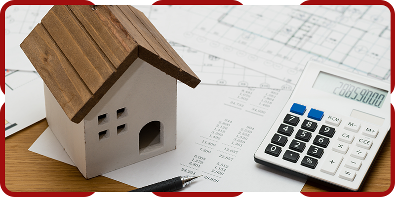

Estimation budgétaire précise
Métrés réels et prix du marché local corse pour un budget fiable, établi avant le démarrage du chantier.
Parce qu'un projet réussi est d'abord un budget maîtrisé : Nuno de Almeida chiffre, analyse et suit chaque euro de votre chantier, pour éviter les mauvaises surprises.
L'économiste de la construction est le garant financier de votre projet. Grâce à des métrés réels et à une parfaite connaissance des prix du marché local corse, il établit une estimation fiable avant le lancement des travaux, puis veille à ce que le budget soit tenu jusqu'à la fin.
Cette double compétence — maître d'œuvre et économiste — est un atout rare : vous bénéficiez d'un regard technique et financier parfaitement aligné sur un même objectif, le vôtre.

Métrés réels et prix du marché local corse pour un budget fiable, établi avant le démarrage du chantier.
Lecture ligne par ligne de chaque devis pour identifier les écarts, les oublis et le juste prix.
Choix d'entreprises partenaires fiables, sur des critères de sérieux, de qualité et de tarif.
Contrôle des dépenses tout au long du chantier pour tenir le budget et sécuriser votre investissement.
Détection en amont des dérives budgétaires pour réagir vite et garder le cap financier.
Des chiffres clairs et expliqués : vous savez à tout moment où va votre argent.
Chaque chantier est suivi avec la même rigueur : validation des situations de travaux, vérification des factures et reporting régulier. Vous restez décideur, en pleine connaissance des chiffres.
Confiez-nous votre projet : nous établissons une estimation claire et réaliste, fondée sur les prix réels du marché corse.